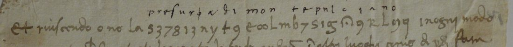

At a glanceExisting decipherment · 25 of 25 signs accounted for
- The document
- An unsigned, undated slip of four lines of Italian with one run of 25 cipher signs in its first line.
- Where
- Archivio di Stato di Siena, Concistoro 2308, fasc. 2, no. 10; DECODE R4799, catalogued “1500–1599” with no status.
- The cipher
- A letter substitution on digits, letters and invented shapes, with two signs each for a and o and three signs that carry no letter.
- How it was deciphered
- At the time: a second hand wrote the letters over the signs. Transcribed here sign by sign; every repeated sign carries the same letter.
- What it says
- “Et riuscendo o no la presura di Montepulciano, in ogni modo …”: whether or not the taking of Montepulciano succeeds.
- Still open
- The date, the writer and the rest of the clear lines.
The Sienese cipher file Concistoro 2308 holds pieces in many different keys; this slip has a cipher of its own, with its own page. The other pieces are listed on the collection’s page. George Lasry’s report on the file (17 October 2026) lists it among the pieces with an interlinear plaintext.
01The slip and its decipherment

The run stands in the first line between the clear words Et riuscendo o no la and in ogni modo. Above it a smaller hand wrote one letter over each sign. Aligned sign by sign, the gloss gives sixteen values and is consistent wherever a sign repeats (the signs for p, r, e, u, i, n each occur twice with the same letter); a and o each have two signs. Three signs have no letter over them: one under a mark like φ between presur and a, one after mon, and the last; they are taken as nulls.
Et riuscendo o no la presura di Montepulciano, in ogni modo …
“And whether or not the taking of Montepulciano succeeds, in any case …” George Lasry’s contents list writes pressura; the gloss has a single s.
02What remains
- The date. Siena and Florence fought over Montepulciano more than once: Florentine from 1390, it went over to Siena in 1495 and back to Florence in 1511. Nothing on the slip fixes the campaign.
- The writer, the addressee, and lines 2–4 of the clear text, which are transcribed only in part.
- The three unglossed signs are read as nulls from the gloss alone (grade I).
03Sources
- Archivio di Stato di Siena, Concistoro 2308 fasc. 2 no. 10: DECODE R4799.
- George Lasry, “The cipher documents of Concistoro 2308, fasc. 2”, report sent to Daniel Bourdeau, 17 October 2026, contents list, section H.
Manuscript rights: Archivio di Stato di Siena.
Transcription with the gloss, sign by sign: targets/siena10/.